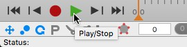
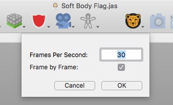
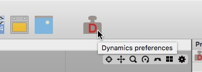

ダイナミクス
Chhetah3Dのダイナミクスフィーチャーは剛体とソフトボディの動的物理演算に使用されます。 Cheetah3Dはハリウッドの超大作などで使用された Bullet Physics engine を採用しています
物理演算を行うには、まずシーン内のどのオブジェクトがダイナミクスシミュレーションを行うものなのかを、Cheetah3Dに指示する必要があります。そのため、目的に沿ったダイナミクスタグをこれらのオブジェクトに適用して下さい。 剛体を作りたい場合は剛体タグを、ソフトボディを作成する場合はソフトボディタグを割り当てます。また、ロープを作成する場合はロープ タグを割り当てます。もし、剛体をソフトボディに固定したい場合は アンカータグを使うことができます。

いくつかのダイナミクスオブジェクトで構成する簡単なシーンです。
そのオブジェクトにその目的のタグを割り当てると、そのダイナミクスタグで物理特性を入力できます。（質量、抵抗、剛性など）

これで準備完了です。タイムラインの再生ボタンを押すとリアルタイムに解析結果の確認ができます。
初期状態
物理シミュレーションには、初期状態が必要になります。時間が 0 の時点の、すべてのオブジェクトの状態（位置、回転、スピートなど）、パーティクルやソフトボディ のコントロールポイントが、初期状態として使用されます。最初にシミュレーションを実行すると、Cheetah3D は自動的に、その時の全てのオブジェクトの初期状態を保存します。一旦時間 0 の時点にアニメーションを戻すと、初期状態が復元されます。オブジェクトの初期状態は時間が 0 の時点にのみ編集する事が可能です。ですから、一度オブジェクトにダイナミクスタグを適用したら、時間が 0 の時点でのみ移動編集する事が出来ます。そうしないと、時間が 0 に変わるとオブジェクトの初期状態が復元されてしまします。
シミュレーションの複雑さ
もしシミュレーションがそれほど複雑でなければ、アニメーションを再生してダイナミクスのシミュレーション結果をリアルタイムに見ることができます。しかし、シミュレーションが 30 FPS でリアルタイムには再生できないほど複雑になってしまう時には、再生モードの"フレーム再生を優先"をオンにする事が推奨されます。これは全てのフレームをシミュレートする事を保証し、Cheetah3D はリアルタイムを維持するためにフレームを飛ばしません。"フレーム再生を優先"は、"アニメーション -> フレーム単位（フレーム/秒）"メニューから選択できます。このモードによってシミュレーションの精度も改善するので、ダイナミクスを使用する際には（リアルタイム再生に関わらず）オンにしておいてもよいでしょう。

シミュレーションで、巨大なパーティクルシステムやソフトボディを使用すると、"フレーム再生を優先"ではさらに、再生が遅くなるかもしれません。その時はシミュレーション結果を焼き付けてください。焼き付けの間、シミュレーション結果はキャッシュに保存され、そのキャッシュはシミュレーションの再生に使用されます。この焼き付け機能で、1000個の剛体を持つパーティクルシステムでも、扱えるようになるでしょう。このダイナミクスキャッシュは .jas ファイルに保存される事に注意して下さい。複雑で巨大なダイナミクスのキャッシュは、ファイルサイズを増大させるでしょう。
ヒント
- ダイナミクスタグを適用したオブジェクトだけが、シミュレーションに影響します。シミュレーションで適用したオブジェクトが少ない程、解析は速くなります。
- オブジェクトが他のオブジェクトを突き抜ける、または通り抜けてしまう場合、環境設定でシミュレーションの精度をあげると改善するでしょう。
- シミュレーションが爆発の結果になる場合があるので、初期状態でダイナミクスオブジェクトは重なり合ってはいけません。
ダイナミクス環境設定
ダイナミクス環境設定には、ダイナミクスツールバーアイコンか、"アニメーション -> ダイナミクス" メニューアイテムを使用してアクセスする事ができます。

ダイナミクス環境設定では、様々な物理環境パラメータを設定の他、初期状態のクリアやシミュレーションの焼き付けのようないくつかの操作も実行する事ができます。
プロパティ
- ダイナミクス On/Off: ダイナミクスシミュレーション On/Off の切換え
- 精度: シミュレーションステップの設定。2x の場合、２回のシミュレーションステップがフレーム毎に計算され、4x の場合、４回のシミュレーションステップがフレーム毎に計算されます。
- 大気密度: 空気密度の設定。このプロパティは、ソフトボディにのみ影響します。
- 水分密度: 水の密度の設定。このプロパティは、ソフトボディにのみ影響します。
- 水面オフセット: 水面のオフセットの設定。このプロパティは、ソフトボディにのみ影響します。
- 水面ノーマル: 水面の法線の設定。このプロパティは、ソフトボディにのみ影響します。
- 重力: 重力加速度の設定。
- 初期状態をクリア: このボタンで、全てのオブジェクトの初期状態をクリアします。
- キャッシュを使う: シミュレーションキャッシュの On/Off の切換え。
- キャッシュをクリア: シミュレーションキャッシュのクリア。キャッシュを使うプロパティを Off にすると自動的にキャッシュを削除します。
- ダイナミクスの焼き付け: 現在のフレームレートでダイナミクスシミュレーションを焼き付けます。シミュレーションの焼き付け成功すると、キャッシュを使うプロパティは自動的に On に切り替わります。